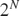
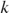

vecEspresso Examples
The function vecEspresso is a wrapper of the function matEspresso (itself a wrapper of Espresso executable). It provides drop-in compatibility with the minTruthtable function (FEX 37118) while leveraging Espresso's superior performance on large problems.
vecEspresso accepts a truth-vector (a vector representing all possible combinations of Boolean variables) and returns minimized covering patterns. This interface matches minTruthtable's core functionality while using a more efficient minimization algorithm.
Refer to the matEspresso documentation for details on obtaining, installing, and configuring the Espresso executable.
Contents
- Terminology
- Truth-Vector Format
- Input: Text
- Input: Numeric or Logical
- Don't-Care Values
- Don't-Care Preservation
- Larger Truth-Vectors
- Using Espresso Options
- No-Output Display Mode
- Output 1: Bins
- Output 2: inps
- Output 3: Nums
- Output 4: ott
- Output 5: expr
- Output 6: debug
- Interesting Edge-Cases
- Espresso vs. Quine-McCluskey
- minTruthtable Compatibility
- When Results Differ from minTruthtable
- Example: Large Truth-Table Performance
Terminology
Terms commonly used in PLA contexts are easily confused with existing terms used in MATLAB that have very different meanings. For that reason we define the following two universal terms in place of the confusing ones:
- "independent-variable" aka input, variable, argument, premise, predicate, condition, domain variable, input signal, etc.
- "dependent-variable" aka output, function, function value, consequent, result, response, target variable, output signal, etc.
Truth-Vector Format
A truth-vector is a row vector of length  that specifies which binary numbers return TRUE for a Boolean function with independent- variables. Position  in the vector gives the dependent-variable value (true/false,DC) when the independent-variables are the binary number written using exactly those bits, e.g. k=2 -> 10 (2 bits).
For example, a 4-element truth-vector has 2-bits/independent-variables:
tt = '1010' tt
Position 0 -> binary 00 -> defined as true '1' Position 1 -> binary 01 -> defined as false '0' Position 2 -> binary 10 -> defined as true '1' Position 3 -> binary 11 -> defined as false '0'
Note that minTruthtable uses the convention that the binary first column (leftmost) is the most significant bit, i.e. MSB -> LSB. For example, a 3-independent-variable function with variables A, B, C:
- Column order in patterns: C B A (left to right)
- Binary counting: 0=000, 1=001, 2=010, 3=011, 4=100, ... k=MSB:LSB ...
Input: Text
The truth-vector may be a character vector or a string scalar, the permitted characters are:
false: '0'
true: '1'
DC: '2' == '-' == '?'
The four outputs are explained in detail below, and here briefly:
- Bins: covering patterns
- inps: number of logic gate inputs needed for implementation
- Nums: which truth-table positions each pattern covers (0-indexed)
- ott: minimized output truth-vector
For example, a 2-independent-variable function that is true at positions 1 and 3:
[Bins,inps,Nums,ott] = vecEspresso('0101')
Bins =
'-1'
inps =
0
Nums =
1×1 cell array
{[1 3]}
ott =
'0101'
Input: Numeric or Logical
Numeric and logical vectors are accepted using these values:
false: 0 == false
true: 1 == true
DC: 2
For example, a 2-independent-variable function that is true at positions 1 and 3:
[BinsN,inpsN,NumsN,ottN] = vecEspresso([0,1,0,1]) [BinsL,inpsL,NumsL,ottL] = vecEspresso([false,true,false,true])
BinsN =
1×2 uint8 row vector
2 1
inpsN =
0
NumsN =
1×1 cell array
{[1 3]}
ottN =
1×4 uint8 row vector
0 1 0 1
BinsL =
1×2 uint8 row vector
2 1
inpsL =
0
NumsL =
1×1 cell array
{[1 3]}
ottL =
1×4 uint8 row vector
0 1 0 1
Don't-Care Values
Don't-care (DC) values indicate positions where the function value is unspecified and can be chosen to simplify the minimization. By default, vecEspresso consumes don't-cares during minimization.
In this example the output ott has consumed the don't-cares (positions 2 and 3) by setting them to '0' to create a simpler covering pattern:
[Bins,inps,Nums,ott] = vecEspresso('01--')
Bins =
'01'
inps =
2
Nums =
1×1 cell array
{[1]}
ott =
'0100'
Don't-Care Preservation
The preserveDC option controls whether don't-cares are consumed or preserved in the output truth-vector. Use preserveDC=true when you need to distinguish between "known false" and "unspecified", such as when iteratively refining a truth table or when documenting which don't-cares were actually used in minimization.
In this example ott preserves the original don't-care positions, only updating positions that are actually covered by the minimization:
[Bins,inps,Nums,ott] = vecEspresso('01--', 'preserveDC',true)
Bins =
'01'
inps =
2
Nums =
1×1 cell array
{[1]}
ott =
'01--'
Larger Truth-Vectors
vecEspresso supports larger truth-vectors compared to minTruthtable, making it suitable for problems with many independent-variables. For example, 4-independent-variables:
[Bins,inps,Nums,ott] = vecEspresso('0000100110001000')
Bins =
3×4 char array
'0111'
'1-00'
'-100'
inps =
13
Nums =
3×1 cell array
{[ 7]}
{[8 12]}
{[4 12]}
ott =
'0000100110001000'
Using Espresso Options
All remaining options are passed directly to matEspresso, please see the matEspresso documentation for complete option descriptions. For example, to use exact minimization (slower but guaranteed optimal):
[Bins,inps,Nums,ott] = vecEspresso('0101', 'Dexact',true)
Bins =
'-1'
inps =
0
Nums =
1×1 cell array
{[1 3]}
ott =
'0101'
No-Output Display Mode
When called without output arguments, vecEspresso displays a formatted summary including a Karnaugh map (for 3-4 independent-variables), all covering terms, the Boolean expression, and statistics:
vecEspresso('01011010')
| Karnaugh map (index to left, -:unused don't-care, =:used don't-care):
| / 0 1 3 2 \ | / . 1 1 . \
| \ 4 5 7 6 / | \ 1 . . 1 /
| All terms:
| * T( 1): "1-0" <-> {4 6}
| * T( 2): "0-1" <-> {1 3}
|
| Z = (A & ~C) | (~A & C);
|
| Logical complexity: 6 inputs
|
| Input tt: "01011010"
| Output tt: "01011010"
Output 1: Bins
The Bins output contains the covering patterns as a character matrix (for char/string input) or uint8 matrix (for numeric/logical input). Each row represents one product term in the minimized expression.
The values in Bins are:
- '0' or 0: independent-variable must be false
- '1' or 1: independent-variable must be true
- '-' or 2: don't-care (independent-variable is not constrained)
The column order follows minTruthtable convention where column 1 is the most significant independent-variable (i.e. MSB of the binary number). For a 4-independent-variable function:
Name: D C B A Column: 1 2 3 4
Pattern: '1010' -> D=1, C=0, B=1, A=0.
Bins = vecEspresso('0000111100110011')
Bins =
2×4 char array
'01--'
'1-1-'
Output 2: inps
The inps output estimates the number of logic gate inputs required for a sum-of-products implementation. To provide a rough measure of PLA-circuit implementation complexity it counts:
- The number of literals in each product term (ignoring single-literal terms)
- One input per product term for the final OR gate (if multiple terms exist)
This metric helps estimate the hardware cost or implementation complexity. Lower inps values indicate simpler logic circuits requiring fewer gates.
In this example, pattern '011' has 3 literals, pattern '1-0' has 2 literals, and with 2 patterns we need a 2-input OR gate, giving inps=7 (3 + 2 + 2):
[Bins,inps] = vecEspresso('00011010')
Bins =
2×3 char array
'011'
'1-0'
inps =
7
Output 3: Nums
The Nums output is a cell array where each cell Nums{k} corresponds to row k in Bins, showing which 0-indexed truth-table positions that pattern covers. This connection between patterns and covered positions is useful for:
- Verifying complete coverage of all true positions
- Understanding which input combinations activate each term
- Debugging unexpected minimization results
In this example, the pattern '1-' covers truth-table positions 2 and 3 (0-indexed), so Nums{1} = [2,3]:
[Bins,inps,Nums] = vecEspresso('0011')
Bins =
'1-'
inps =
0
Nums =
1×1 cell array
{[2 3]}
Output 4: ott
The ott output is the reconstructed truth-vector showing which positions are covered by the minimized expression. By default, don't-cares are consumed (set to '0' or '1'):
[Bins,inps,Nums,ott] = vecEspresso('01--1001')
Bins =
3×3 char array
'100'
'001'
'111'
inps =
12
Nums =
3×1 cell array
{[4]}
{[1]}
{[7]}
ott =
'01001001'
Output 5: expr
A character vector containing one Boolean expression per dependent-variable, separated by newlines (see matEspresso):
[~,~,~,~,expr] = vecEspresso('01--1001')
expr =
'Z = (A & ~B & ~C) | (~A & ~B & C) | (A & B & C)'
Output 6: debug
A scalar structure containing diagnostic information (see matEspresso):
[~,~,~,~,~,debug] = vecEspresso('0110') debug.time % Timing information
debug =
struct with fields:
options: [1×1 struct]
time: [1×1 struct]
system: [1×1 struct]
raw: [1×1 struct]
ans =
struct with fields:
Espresso: 0.12524
matEspresso: 0.13144
vecEspresso: 0.13503
Interesting Edge-Cases
[~,~,~,ott] = vecEspresso('1111') % Constant-true function, output remains true [~,~,~,ott] = vecEspresso('0000') % Constant-false function, output remains false [~,~,~,ott] = vecEspresso('----') % DCs treated as all false (conservative) [~,~,~,ott] = vecEspresso('--00') % DCs consumed as false when not needed
ott =
'1111'
ott =
'0000'
ott =
'0000'
ott =
'0000'
Espresso vs. Quine-McCluskey
vecEspresso uses the Espresso algorithm, while minTruthtable uses the Quine-McCluskey algorithm. Both produce minimal or near-minimal Boolean expressions, but differ in:
Performance
- Espresso: Heuristic approach, scales well to large problems
- Quine-McCluskey: Exact but exponential complexity, slow for 10+ independent-variables
Don't-Care Handling
- Espresso: Conservative - uses DCs only when beneficial for minimization
- Quine-McCluskey: Aggressive - maximally absorbs DCs into larger terms
This leads to systematically different (but equally valid) results when don't-cares are present.
Consider a truth-vector with don't-cares at positions 3 and 6. Here minTruthtable creates the pattern '01-' which absorbs the don't-care at position 3 to cover both positions 2 and 3, producing ottM = '01110100'. In contrast, vecEspresso uses the more specific pattern '010' that covers only position 2 without absorbing the don't-care, producing ottE = '01100100'. Both approaches produce valid minimal forms with similar complexity (i.e. inpsM=6 vs inpsE=7), the difference reflects algorithmic philosophy rather than one being superior to the other.
tt = '011-01-0';
[BinsM,inpsM,NumsM,ottM] = minTruthtable(tt)
[BinsE,inpsE,NumsE,ottE] = vecEspresso(tt)
BinsM =
2×3 char array
'-01'
'01-'
inpsM =
6
NumsM =
2×1 cell array
{[1 5]}
{[2 3]}
ottM =
'01110100'
BinsE =
2×3 char array
'010'
'-01'
inpsE =
7
NumsE =
2×1 cell array
{[ 2]}
{[1 5]}
ottE =
'01100100'
minTruthtable Compatibility
vecEspresso is designed as a drop-in replacement for minTruthtable, with some key differences.
vecEspresso supports:
- Core minTruthtable functionality (truth-vector minimization),
- The same four outputs (Bins, inps, Nums, ott),
- Input tt may be character, string, numeric, or logical.
The output type of Bins and ott match the input type where practical:
- tt numeric/logical vector -> output uint8 vector (using values 0, 1, and 2),
- tt character vector -> output character vector (using '0', '1', and '-'),
vecEspresso does not support:
- minTruthtable optimization flags ('e', 'Q', 'q', numeric levels),
- Verification flag 'v' (not needed - Espresso is well-tested).
vecEspresso additional features:
- 'preserveDC' option to control don't-care handling,
- All matEspresso options (e.g. 'Dexact', 'Efast', etc.),
- Fifth output debug with diagnostic information,
- Supports numeric, logical, and string classes for input & output.
vecEspresso performance:
- Generally faster for problems with 10+ independent-variables,
- Input is not limited to 2^15 elements,
- Uses heuristic minimization strategies.
When to use vecEspresso:
- Working with more than 10 independent-variables,
- Truth tables larger than 2^15 elements,
- Speed is more important than guaranteed optimality,
- Working with very sparse truth tables (few true positions).
When to use minTruthtable:
- Need guaranteed optimal solution (use with 'e' flag),
- Working with <=10 independent-variables where speed isn't critical,
- Prefer Quine-McCluskey's aggressive DC absorption,
- Want to verify results against a different algorithm.
When Results Differ from minTruthtable
vecEspresso and minTruthtable may produce different (but equivalent) minimal forms when:
- Multiple optimal solutions exist (common in Boolean minimization)
- Don't-cares are present (different absorption strategies)
- Tie-breaking choices differ between algorithms
All differences represent valid minimal or near-minimal solutions.
vecEspresso prioritizes:
- Speed for large problems
- Heuristic efficiency
- Conservative don't-care usage
minTruthtable prioritizes:
- Exact optimality (when using 'e' flag)
- Maximal term coverage
- Aggressive don't-care absorption
For problems with don't-cares or multiple optimal solutions, results may differ in how DCs are handled (both being valid minimal forms, in this case Espresso found a minimal form with slightly higher complexity):
tt = '01--1001';
[BinsM,inpsM,NumsM,ottM] = minTruthtable(tt)
[BinsE,inpsE,NumsE,ottE] = vecEspresso(tt)
BinsM =
3×3 char array
'100'
'0-1'
'-11'
inpsM =
10
NumsM =
3×1 cell array
{[ 4]}
{[1 3]}
{[7 3]}
ottM =
'01011001'
BinsE =
3×3 char array
'100'
'001'
'111'
inpsE =
12
NumsE =
3×1 cell array
{[4]}
{[1]}
{[7]}
ottE =
'01001001'
Example: Large Truth-Table Performance
vecEspresso excels with larger problems. This would be impractical for minTruthtable but vecEspresso handles it efficiently using Espresso's heuristic algorithms. For example, a 16-independent-variable truth-table (65,536 elements):
tt = repmat('0', 1, 2^16); % 16 independent-variables tt([1, 100, 1000, 10000, 50000]) = '1'; % 5 true minterms tic [Bins, inps, Nums, ott] = vecEspresso(tt); toc
Elapsed time is 1.449644 seconds.